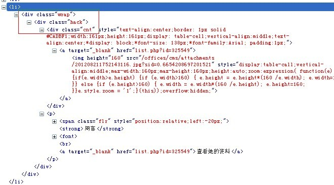

1.第一种情况，在已知高度的状态下，以li为例，兼容到IE6

.wrap{width:95px; height:45px;display:table;*position:relative;}
.hack{display:table-cell; vertical-align:middle;*position:absolute;*top:50%;}
.cnt{*position:relative;*top:-50%;}
2.未知高度
HTML：
<div id="outer">
<div id="middle">
<div id="inner" class="greenBorder"></div>
</div>
</div>
CSS：
body {padding: 0; margin: 0;}
body,html{height: 100%;}
#outer {height: 100%; overflow: hidden; position: relative;width: 100%; background:ivory;}
#outer[id] {display: table; position: static;}
#middle {position: absolute; top: 50%;} /* for explorer only*/
#middle[id] {display: table-cell; vertical-align: middle; position: static;}
#inner {position: relative; top: -50%;width: 400px;margin: 0 auto;} /* for explorer only */
div.greenBorder {border: 1px solid green; background-color: ivory;}